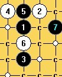

（I10局）山口下的明星
#1 （I10局）山口下的明星作者：淡红的秋樱 发表时间：2009-10-12 13:47:45
=======上图对应的爱五子棋谱代码如下，以便你拆解：========
h8i9h6i10j8i7i8g8f7i6j9h9j11j10k10h7f9j7k7k8l9i12m9i5h5l11i11
======================================================
#2 Re:山口下的明星作者：淡红的秋樱 发表时间：2009-10-12 13:54:58
=======上图对应的爱五子棋谱代码如下，以便你拆解：========
h8i9h6i10h10i8h9h7i7j9h11h12k10j8j6g9i12l9l8k7
======================================================
平衡
#3 Re:山口下的明星作者：淡红的秋樱 发表时间：2009-10-12 14:10:47
=======上图对应的爱五子棋谱代码如下，以便你拆解：========
h8i9h6i10i11h9g9i7h10j12i6g8j11g6f7f8
======================================================
和瑞星好像哦。
这个变化挺乱的。变招特多。
=======上图对应的爱五子棋谱代码如下，以便你拆解：========
h8i9h6i10i11h9g9h10i7f10g10j8g11g8j11h11
======================================================
=======上图对应的爱五子棋谱代码如下，以便你拆解：========
h8i9h6i10i11j8h10g9j9h7f9i6
======================================================
白6变招，黑棋不从上面急攻，机会挺多的。
#4 Re:山口下的明星作者：淡红的秋樱 发表时间：2009-10-12 14:14:45
=======上图对应的爱五子棋谱代码如下，以便你拆解：========
h8i9h6i10j9h10i11j11j10j8g11k10k9h12i12k12l13l8l9k6
======================================================
白胜
参考ShowPost.asp?PageIndex=2&ThreadID=8495 19楼
［ 茗弈小刀 于 2009-10-30 18:45:34 时奖励此帖[金币加 20 威望加1］
#5 Re:山口下的明星作者：逆刃 发表时间：2009-10-12 18:14:55
第一图的那个5，白棋10手错误，黑棋直接简单VCT。
［ 失落刀 于 2009-10-12 20:00:55 时花20金币送鲜花一朵］
#6 Re:山口下的明星作者：逆刃 发表时间：2009-10-12 20:34:51
一楼的5是必胜的，我发个地毯共享下吧。
=======上图对应的爱五子棋谱代码如下，以便你拆解：========
h8i9h6i10j8
======================================================
明星必胜5地毯。
 明星弱4一个必胜5.rar
明星弱4一个必胜5.rar［ 淡红的秋樱 于 2009-10-12 21:28:48 时花20金币送鲜花一朵］
［ 失落刀 于 2009-10-12 22:26:40 时奖励此帖[金币加 20 威望加1］
［ 小天元子 于 2009-10-14 11:24:06 时花20金币送鲜花一朵］
#7 Re:山口下的明星作者：淡红的秋樱 发表时间：2009-10-12 21:28:40
25手直接活三是简单一些。对于5楼所说的其他变化，黑棋也必胜，逆刃居然自己完成了。送上鲜花一朵
#8 Re:山口下的明星作者：潇洒 发表时间：2009-10-19 17:29:45
=======上图对应的爱五子棋谱代码如下，以便你拆解：========
h8i9h6g9h9
======================================================
=======上图对应的爱五子棋谱代码如下，以便你拆解：========
h8i9h6h9j9
======================================================
研究这两个5（有实战价值）
#9 Re:山口下的明星作者：潇洒 发表时间：2009-10-26 15:49:08
=======上图对应的爱五子棋谱代码如下，以便你拆解：========
h8i9h6h9j9j8k7j11i10h11g10g11a1k10b1h10
======================================================
#10 Re:山口下的明星作者：潇洒 发表时间：2009-10-26 15:50:05
=======上图对应的爱五子棋谱代码如下，以便你拆解：========
h8i9h6h9j9j8h10g10i8h7f9f8f7a1j6b1k7
======================================================
哪个13好？？
#11 Re:（I10局）山口下的明星作者：千羽鹤 发表时间：2009-11-1 3:07:36
=======上图对应的爱五子棋谱代码如下，以便你拆解：========
h8i9h6h9j6g8g9i7i10
======================================================
有一路定式后面是怎样的。。
#12 Re:（I10局）山口下的明星作者：小天元子 发表时间：2009-11-1 15:12:22
=======上图对应的爱五子棋谱代码如下，以便你拆解：========
h8i9h6h9j6g8g9i7f7
======================================================
=======上图对应的爱五子棋谱代码如下，以便你拆解：========
h8i9h6h9j6i10g9i7i8g8f7l9
======================================================
#13 Re:（I10局）山口下的明星作者：淡红的秋樱 发表时间：2009-11-1 15:45:57
=======上图对应的爱五子棋谱代码如下，以便你拆解：========
h8i9h6h9j6g8g9i7f7i6i8k9
======================================================
=======上图对应的爱五子棋谱代码如下，以便你拆解：========
h8i9h6h9j6i10g9i7i8g8f7l9g6i6h5
======================================================
#14 Re:（I10局）山口下的明星作者：茗弈小刀 发表时间：2009-11-11 19:49:35
来学习下山口#15 Re:（I10局）山口下的明星作者：屏蔽 发表时间：2010-3-11 10:26:26
=======上图对应的爱五子棋谱代码如下，以便你拆解：========
h8i9h6g9i7j8k7g11h9
======================================================
关于这个变化的后续是怎么样的？
虽然一直有白好的结论，但今天第一次分析，不知道怎样占优了
上次中村和陈科翰那一局双方的问题在哪里？
#16 Re:（I10局）山口下的明星作者：淡红的秋樱 发表时间：2010-3-11 13:35:19
http://hi.baidu.com/%D6%E4%C1%E9_/blog/item/78680a1ac2cd50108718bf46.html
=======上图对应的爱五子棋谱代码如下，以便你拆解：========
h8i9h6g9i7j8k7g11h9h7h10h11
======================================================
白棋不怕黑棋穿通
=======上图对应的爱五子棋谱代码如下，以便你拆解：========
h8i9h6g9i7j8k7g11h9h10f12h7
======================================================
这样也可以。看起来有些重复。
=======上图对应的爱五子棋谱代码如下，以便你拆解：========
h8i9h6g9i7j8k7g11h9h10f12j7
======================================================
中村茂实战的12虽然自己多一个2，但对手也多一个绵三。所以黑棋有了少许机会向下发展。
=======上图对应的爱五子棋谱代码如下，以便你拆解：========
h8i9h6g9i7j8h7h9j9k7a1h5b1i8
======================================================
白棋大致有10-12-14三个走法。
#17 Re:（I10局）山口下的明星作者：淡红的秋樱 发表时间：2010-3-11 14:16:02
=======上图对应的爱五子棋谱代码如下，以便你拆解：========
h8i9h6g9h9h7i8g8g10f11i6j7i5
======================================================
白10错误，必胜型。caodong vs okabe http://jupiter.usedns.com/~renjune/showboard.php?game=27012
#18 Re:（I10局）山口下的明星作者：屏蔽 发表时间：2010-3-11 14:31:11
=======上图对应的爱五子棋谱代码如下，以便你拆解：========
h8i9h6g9i7j8k7g11h9h7f8g8g10
======================================================
如果是这个11呢？
#19 Re:（I10局）山口下的明星作者：淡红的秋樱 发表时间：2010-3-11 15:28:06
=======上图对应的爱五子棋谱代码如下，以便你拆解：========
h8i9h6g9i7j8k7g11h9h7f8j9
======================================================
#20 Re:（I10局）山口下的明星作者：屏蔽 发表时间：2010-3-12 16:09:06
=======上图对应的爱五子棋谱代码如下，以便你拆解：========
h8i9h6g9h5
======================================================
白棋防上面的很多胜法不成立，防中间的话黑棋有机会么？
ShowPost.asp?PageIndex=5&ThreadID=4943
48L：这个黑5白必胜？
现在在学校不能下载iwzq上面的附件，特别悲剧
能上传为啥不能下载啊（打滚
大明星里面这个同型5必败----失落刀
［此帖子已被 失落刀 在 2010-3-13 22:27:58 编辑过］
#21 Re:Re:（I10局）山口下的明星作者：淡红的秋樱 发表时间：2010-3-12 16:40:54
=======上图对应的爱五子棋谱代码如下，以便你拆解：========
h8i9h5g9h6h9j9f7e6h7
123.rar#22 Re:（I10局）山口下的明星作者：屏蔽 发表时间：2010-3-13 14:38:34
=======上图对应的爱五子棋谱代码如下，以便你拆解：========
h8i9h6g9j7
======================================================
这个变化如何？
#23 Re:（I10局）山口下的明星作者：失落刀 发表时间：2010-3-13 22:19:04
=======上图对应的爱五子棋谱代码如下，以便你拆解：========
h8i9h6g9j7g11
======================================================
这个6必胜吧。
#24 Re:（I10局）山口下的明星作者：屏蔽 发表时间：2010-3-17 11:51:53
=======上图对应的爱五子棋谱代码如下，以便你拆解：========
h8i9h6g9i8h9j9g8g6h7i6j6f8
======================================================
论坛战中出现过的变化，但感觉交换得当的话双方机会都不多？
#25 Re:Re:山口下的明星作者：sonix 发表时间：2010-3-25 16:43:40
引用：
原文由 潇洒 发表于 2009-10-19 17:29:45 :
=======上图对应的爱五子棋谱代码如下，以便你拆解：========
h8i9h6g9h9
======================================================
=======上图对应的爱五子棋谱代码如下，以便你拆解：========
h8i9h6h9j9
======================================================研究这两个5（有实战价值）

貌似黑优？
#26 Re:（I10局）山口下的明星作者：屏蔽 发表时间：2010-4-14 18:46:05
=======上图对应的爱五子棋谱代码如下，以便你拆解：========
h8i9h6g9h9h7j8i7i8g8j7g10g7j6k8l8i6h5k10l9j9
======================================================
19能否必胜？
#27 Re:（I10局）山口下的明星作者：江南新绿 发表时间：2010-6-8 0:31:45
=======上图对应的爱五子棋谱代码如下，以便你拆解：========
h8i9h6g9h9h7j8g8a15i6
======================================================
剩下8和10，还有两个被我干掉了。
#28 Re:（I10局）山口下的明星作者：失落刀 发表时间：2010-6-15 14:57:23
=======上图对应的爱五子棋谱代码如下，以便你拆解：========
h8i9h6g9h9h7j8g8j6
======================================================
［ 淡红的秋樱 于 2010-6-15 20:11:26 时花20金币送鲜花一朵］
#29 Re:（I10局）山口下的明星作者：小玄 发表时间：2010-6-16 18:11:20
=======上图对应的爱五子棋谱代码如下，以便你拆解：========
h8i9h6g9h9h7j8g8j6g6g7i5
======================================================
请问一下13下哪好呢?
#30 Re:（I10局）山口下的明星作者：淡红的秋樱 发表时间：2010-6-17 12:33:39
=======上图对应的爱五子棋谱代码如下，以便你拆解：========
h8i9h6g9h9h7j8g8i6
======================================================
28楼也许没有必胜，这个倒也许必胜了。欢迎交流新看法。
=======上图对应的爱五子棋谱代码如下，以便你拆解：========
h8i9h6g9h9h7j8i6
======================================================
目前还剩下这个8，如能解决，就等同于找到一个必胜5
［此帖子已被 淡红的秋樱 在 2010-6-17 12:38:56 编辑过］
#31 Re:（I10局）山口下的明星作者：屏蔽 发表时间：2010-6-17 16:24:05
#32 Re:（I10局）山口下的明星作者：淡红的秋樱 发表时间：2010-6-17 16:36:54
=======上图对应的爱五子棋谱代码如下，以便你拆解：========
h8i9h6g9h9h7j8g8i6j6g7i5k9i7k8i8k10k7l8
======================================================
左下和右上都存在着黑棋的攻击区域，但两者不可得兼。此图是我给出的理想图。
=======上图对应的爱五子棋谱代码如下，以便你拆解：========
h8i9h6g9h9h7j8g8i6j6k8i8g6i7
======================================================
tennet同587的实战，黑棋从右上过渡到左下，被白棋分割
=======上图对应的爱五子棋谱代码如下，以便你拆解：========
h8i9h6g9h9h7j8g8i6j6g6i7h5j7f6e6g7h4i5f8
======================================================
黑棋改一个次序就能走的更强，对比587的实战，这样白棋没有反击。
=======上图对应的爱五子棋谱代码如下，以便你拆解：========
h8i9h6g9h9h7j8g8i6j6g6g5a15h5
======================================================
这样白棋只能防守左下，此图例举两种防守形式。此后，黑棋可以在右边或上方攻击。攻击力量依然强大。
［此帖子已被 淡红的秋樱 在 2010-6-17 16:41:38 编辑过］
#33 Re:山口下的明星作者：黑衣人 发表时间：2010-6-17 17:17:23
引用：
原文由 sonix 发表于 2010-3-25 16:43:40 :引用：
原文由 潇洒 发表于 2009-10-19 17:29:45 :
=======上图对应的爱五子棋谱代码如下，以便你拆解：========
h8i9h6g9h9
这个黑5是必胜的
［此帖子已被 黑衣人 在 2010-6-17 17:19:08 编辑过］
#34 Re:（I10局）山口下的明星作者：淡红的秋樱 发表时间：2010-6-17 21:46:28
33楼忽悠人的吧。#35 Re:（I10局）山口下的明星作者：棋心 发表时间：2010-6-19 14:27:10
=======上图对应的爱五子棋谱代码如下，以便你拆解：========
h8i9h6h9j6
======================================================
发些这个5的变化上来
#36 Re:（I10局）山口下的明星作者：好学 发表时间：2010-7-29 13:31:01
=======上图对应的爱五子棋谱代码如下，以便你拆解：========
h8i9h6g9h9h7j8g8i6g6g7i7
======================================================
这个12谁能杀干净？
#37 Re:（I10局）山口下的明星作者：淡红的秋樱 发表时间：2010-7-29 17:54:53
=======上图对应的爱五子棋谱代码如下，以便你拆解：========
h8i9h6g9h9h7j8g8i6g6g7i7j7i8j9i10i11j6g11j11f10h12f11h11d10
======================================================
回楼上
#38 Re:（I10局）山口下的明星作者：好学 发表时间：2010-7-29 20:32:44
已解决，谢谢楼上#39 Re:（I10局）山口下的明星作者：潇洒 发表时间：2010-8-8 13:50:09
=======上图对应的爱五子棋谱代码如下，以便你拆解：========
h8i9h6g9i8
======================================================
#40 Re:（I10局）山口下的明星作者：淡红的秋樱 发表时间：2010-8-8 16:52:03
39楼参考24楼，贴过了吧。#41 Re:（I10局）山口下的明星作者：潇洒 发表时间：2010-8-8 19:31:00
谢谢江南教主））#42 Re:Re:（I10局）山口下的明星作者：足球赛 发表时间：2010-8-9 17:45:15
引用：
原文由 屏蔽 发表于 2010-3-11 10:26:26 :
=======上图对应的爱五子棋谱代码如下，以便你拆解：========
h8i9h6g9i7j8k7g11h9
======================================================关于这个变化的后续是怎么样的？
虽然一直有白好的结论，但今天第一次分析，不知道怎样占优了
上次中村和陈科翰那一局双方的问题在哪里？
黑7必败之地毯
黑7必败之地毯.rar#43 Re:（I10局）山口下的明星作者：岳麓小棋后 发表时间：2010-9-30 11:31:45
=======上图对应的爱五子棋谱代码如下，以便你拆解：========
h8i9h6g9i7j8h7h9j9h5
======================================================
这个10大家有什么好的进攻路线推荐吗？感觉像个弱防，但包起饺子来也是有声有色的！
#44 Re:（I10局）山口下的明星作者：小帮帮 发表时间：2010-11-15 13:44:08
=======上图对应的爱五子棋谱代码如下，以便你拆解：========
h8i9h6g9i7j8h7h9j9h5k7j7i8g6k6
======================================================黑必胜
#45 Re:Re:（I10局）山口下的明星作者：欧艾沃 发表时间：2011-5-26 3:37:08